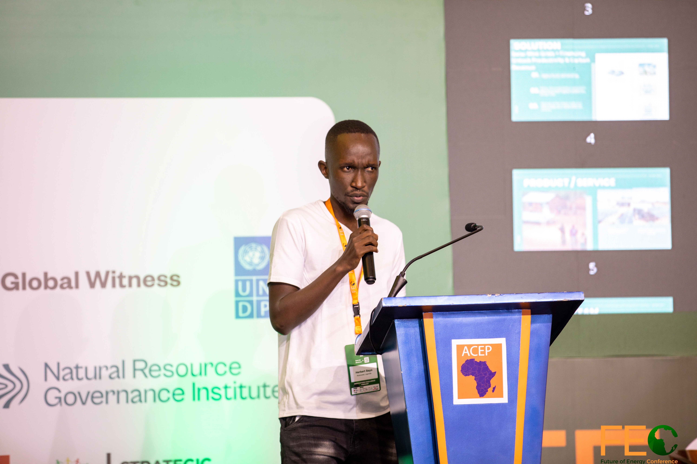

Keynote
Future of Energy Conference — Ghana
Presenting LBS Energy's roadmap for off-grid communities to thrive using clean, solar mini-grid infrastructure.

On stage, I bridge the gap between technical innovation and regional policy, advocating for a sustainable African energy and agricultural future.
Presenting LBS Energy's roadmap for off-grid communities to thrive using clean, solar mini-grid infrastructure.

Exploring strategies for sustainable carbon trading and its direct application in driving regenerative agriculture.
Global stage for Nutravest’s AI-driven geospatial solutions for land restoration at the AUDA-NEPAD Summit.
Decentralizing power through mini-grids to enable rural micro-enterprise growth.
Using data-driven traceability to bring transparent carbon income to smallholders.
Preparing East African exports for evolving European trade regulations.